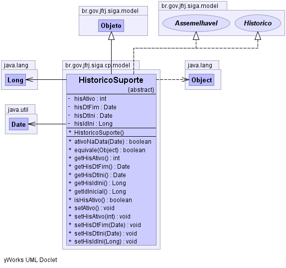

br.gov.jfrj.siga.cp.model
Class HistoricoSuporte
java.lang.Object
 br.gov.jfrj.siga.model.ObjetoBase
br.gov.jfrj.siga.model.Objeto
br.gov.jfrj.siga.cp.model.HistoricoSuporte
br.gov.jfrj.siga.model.ObjetoBase
br.gov.jfrj.siga.model.Objeto
br.gov.jfrj.siga.cp.model.HistoricoSuporte
- All Implemented Interfaces:
- Assemelhavel, Historico
- Direct Known Subclasses:
- AbstractCpOrgao, AbstractCpPapel, HistoricoAuditavelSuporte
public abstract class HistoricoSuporte
- extends Objeto
- implements Historico, Assemelhavel
-
-

| Methods inherited from class java.lang.Object |
clone, finalize, getClass, hashCode, notify, notifyAll, wait, wait, wait |
hisIdIni
private java.lang.Long hisIdIni
hisDtIni
private java.util.Date hisDtIni
hisDtFim
private java.util.Date hisDtFim
hisAtivo
private int hisAtivo
HistoricoSuporte
public HistoricoSuporte()
setAtivo
public void setAtivo()
- Atribui o hisAtivo já que o mesmo é sempre calculado
getHisIdIni
public java.lang.Long getHisIdIni()
- Specified by:
getHisIdIni in interface Historico
setHisIdIni
public void setHisIdIni(java.lang.Long hisIdIni)
- Specified by:
setHisIdIni in interface Historico
getHisDtIni
public java.util.Date getHisDtIni()
- Specified by:
getHisDtIni in interface Historico
setHisDtIni
public void setHisDtIni(java.util.Date hisDtIni)
- Specified by:
setHisDtIni in interface Historico
getHisDtFim
public java.util.Date getHisDtFim()
- Specified by:
getHisDtFim in interface Historico
setHisDtFim
public void setHisDtFim(java.util.Date hisDtFim)
- Specified by:
setHisDtFim in interface Historico
getHisAtivo
public int getHisAtivo()
- Specified by:
getHisAtivo in interface Historico
isHisAtivo
public boolean isHisAtivo()
setHisAtivo
public void setHisAtivo(int hisAtivo)
- Specified by:
setHisAtivo in interface Historico
equivale
public boolean equivale(java.lang.Object other)
- Specified by:
equivale in interface Historico
getIdInicial
public java.lang.Long getIdInicial()
- Specified by:
getIdInicial in interface Historico
ativoNaData
public boolean ativoNaData(java.util.Date dt)
- Verifica se estava ativo em uma determinada data
- Parameters:
dt - data em que se quer verificar se estava ativo
- Returns:
- true or false